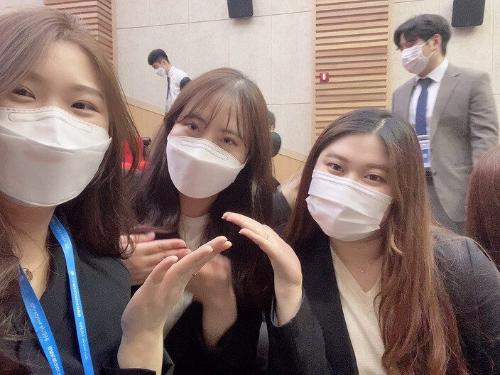

전공생임에도 불구하고 학교에서 배운 지식이 제한적이라고 생각하여 스마트인재개발원에 오게되었습니다. 스마트인재개발원 인공지능 과정을 들으면서 보다 넓은 공부를 할 수 있었으며 새로운 공부를 하면서 배운점이 많았던것 같습니다. 특히 많이 부족하다고 생각했던 프로젝트 경험을 통해 다양한 사람들과 웃으면서 또는 같이 막히는 부분을 풀어가면서 뜻 깊은 시간이 되었습니다. 여기에 오지 않았다면 졸업 전 겨울방학 시간을 알차게 쓰지 못했을거 같습니다. 지영쌤의 첫 제자가 저희 인공지능 반이여서 매우매우 좋습니다!!! 지영쌤 5개월동안 너무 감사하고 친한 언니처럼 이야기해주셔서 감사합니당!! 지영쌤과 인공지능 반은 꽃길만 걷자~~
